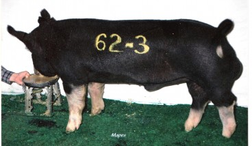
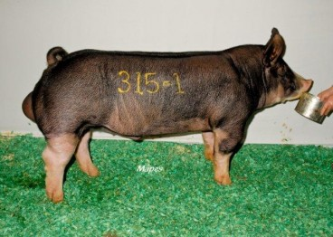
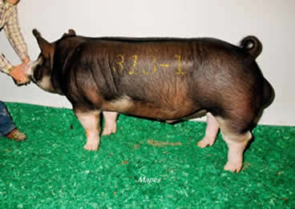

<div class="container">
	<div class="row card">
		<div class="card-body">
			<h5 class="card-title">Upcoming Litters 2020</h5>

			<table class="w-100 table">
				<tbody>
					<tr>
						<td class="pt-5">Anvil</td>
						<td>
							<a href="http://realhogfarms.com/boars/berkshire/">
								
							</a>
						</td>
						<td>
							One of the cornerstones for our Berkshires. He was our pick of the 2006 Southwest Type
							Conference in Plainview, TX. At eight years of age, he still gives his pigs the look to win
							in the show ring by making them up-headed and beautifully profiled without sacrificing
							structure, bone or muscle.
						</td>
					</tr>
					<tr>
						<td class="pt-5">Black Widow</td>
						<td>
							<a href="http://realhogfarms.com/boars/berkshire/">
								
							</a>
						</td>
						<td>
							This new addition to our herd has enhanced and complemented our existing genetics. He has
							that “barrow-maker” look that sets himself and his pigs apart from the others. This, coupled
							with plenty of bone, a bold and square rib, powerful forearm, and tremendous top shape, are
							sure to make his pigs winners. Owned with Real. REG#105250007
						</td>
					</tr>
					<tr>
						<td class="pt-5">Willis</td>
						<td>
							<a href="http://realhogfarms.com/boars/berkshire/">
								
							</a>
						</td>
						<td>
							Champion Berkshire Boar, 2011 Fall Classic. Dam is littermate to Time After Time. Bred by
							Randy Pullan, OK. A Berkshire boar to power you up with rib, body, muscle and a look to turn
							heads. He’s already produced several champions, including the 2013 Grand Champion Market Hog
							at Gillespie County. What chu Talkin’ bout Willis! Owned with Holt and Real. REG#109072003
						</td>
					</tr>
				</tbody>
			</table>

		</div>
	</div>


</div>